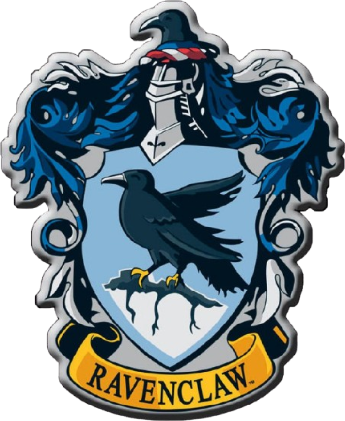

|
Ravenclaw was one of four Hogwarts houses and prized students whose focus was on
learning, wit and wisdom. This reflected the nature of their founder, Rowena
Ravenclaw who was known to be a woman of remarkable diligence and intelligence. The
Ravenclaw common room was decorated with the house colours of blue and bronze along with
their eagle emblem. The students were able to study hard in the rooms that were full of
tables and bookcases, although if they were unable to solve the bronze knocker’s riddle they
couldn't get in until someone arrived who could!
|

|
.png)
|
One of the four Hogwarts houses, Gryffindor was founded by Godric Gryffindor and favoured
students who possessed characteristics such as courage, bravery and determination.
The house colours were scarlet and gold, and the emblematic animal was a lion, which
decorated the walls of the Gryffindor common room. Gryffindor alumni included all seven
Weasley children, Harry Potter, Hermione Granger, all four Marauders and Albus Dumbledore.
Gryffindor students embraced a long held rivalry with Slytherin house although they were
largely friendly with Ravenclaw and Hufflepuff students.
|
|
Slytherin was one of the four Hogwarts houses and was characterised by its silver and green
colours and serpent emblem. Founded by Salazar Slytherin, the students sent to Slytherin
were representative of his preference for characters defined by cunning, pride and
ambition. Suspicions about the house's connections to the Dark Arts were hard to
dispel, particularly as it was the house of Lord Voldemort and boasted a number of Death
Eaters and their children. However, Slytherin had a lot of members that contradicted this
reputation. For instance, renowned wizard Merlin reigned from Slytherin, and some of the
future generations, such as Draco Malfoy's son Scorpius, proved that you could be a
Slytherin and still be kind.
|
.png)
|
.png)
|
One of the four Hogwarts houses, Hufflepuff was founded by Helga Hufflepuff who valued
hard work, patience, loyalty and fairness over any particular aptitude in any of her
students. Although Hagrid may have once said, 'everyone says Hufflepuff are a lot o'
duffers' they were actually well known to be kind, reliable and honest. The house's colours
were black and yellow and its emblem a badger. These colours decorated the walls of
Hufflepuff's underground common room, which featured cosy burrow-like rooms, resembling a
badger's sett.
|